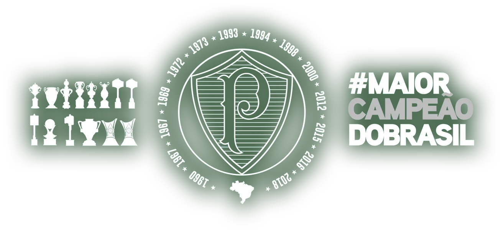
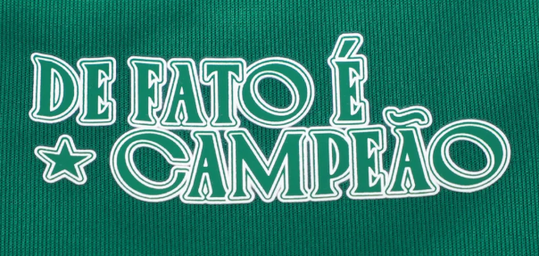

Seja bem-vindo ao mundo do Palmeiras, um dos clubes mais vitoriosos, apaixonantes e tradicionais do futebol brasileiro!
Aqui você encontrará tudo sobre o Maior Campeão do Brasil: sua rica história, seus títulos inesquecíveis, seus craques eternos e a força de uma torcida que nunca abandona.
Navegue, vibre, se emocione, porque ser palmeirense é viver intensamente cada momento com o coração verde e branco pulsando forte!
💚 Avanti, Palestra!
Bem-vindo ao site do Maior Campeão do Brasil!

Principais Ídolos do Palmeiras
Os ídolos do Palmeiras são verdadeiros símbolos de garra, talento e amor pelo clube. Entre eles, destacam-se:
- **Marcos**: O eterno goleiro, conhecido como "São Marcos", é um dos maiores ídolos da história do clube, com defesas memoráveis e uma carreira repleta de títulos.
- **Edmundo**: O "Animal" é lembrado por sua habilidade e paixão em campo, sendo um dos atacantes mais icônicos do Verdão.
- **César Maluco**: Um dos maiores artilheiros da história do Palmeiras, famoso por seu estilo único e gols decisivos.
- **Ademir da Guia**: O maior, mais icônico e importante jogador que já jogou pelo Alviverde Imponente.
Esses craques deixaram suas marcas na história do clube e continuam a ser reverenciados pela torcida.

História do Palmeiras
A Sociedade Esportiva Palmeiras nasceu em 26 de agosto de 1914, fundada por imigrantes italianos na cidade de São Paulo, inicialmente com o nome de Palestra Italia. A ideia era representar a força e o orgulho da colônia italiana por meio do futebol. Desde o início, o clube mostrou grandeza, conquistando rapidamente seu espaço entre os grandes do país.
Durante a Segunda Guerra Mundial, por causa de pressões políticas, o clube foi obrigado a mudar seu nome, devido à proibição de símbolos ligados ao Eixo (Itália, Alemanha e Japão). Em 1942, surgiu então o nome Palmeiras, e com ele já veio uma vitória histórica: o clube venceu o São Paulo no que ficou conhecido como a “Arrancada Heroica”, com os jogadores adversários abandonando o campo, e o Verdão se sagrando campeão paulista.
Desde então, o Palmeiras se consolidou como um dos maiores clubes do Brasil e do mundo, conquistando títulos importantes como a Copa Rio Internacional de 1951, considerada a primeira competição mundial de clubes, e uma série de campeonatos brasileiros, copas do Brasil e estaduais.
💚 Ser Palmeiras é carregar no peito a história de um gigante.
